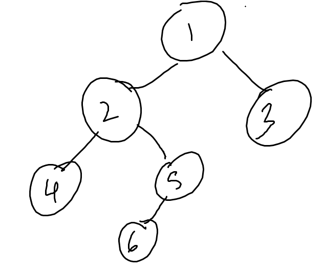

Based on content taught by Mark Sheldon in Spring 2021. All programming questions use the C++ language.
1. Consider the following lines of code in C++. Which of the following is a stylistically better alternative?
if (isBig == true) {
return true;
} else {
return false;
}if (isBig == true) return true; else return false;return isBig;return not isBig;2. Simplify the following RPN (reverse polish notation) expression: 1 2 + 3 + 1 *
3. What are the steps to expanding the array in the ArrayList class?
4. Consider the following line of code in C++. Which of the Big Three runs when this line is executed (prevValue is an existing instance of MyClass)?
MyClass myValue = prevValue;
5. Which of the following is not representative of the LinkedList implementation? Assume that no cycles result in any of these.
6. A queue is useful in all of the following situations EXCEPT...
7. A stack is a(n) _____ of a list.
8. Which of the following is NOT a representation invariant (for a correctly formed data structure)?
ArrayList's capacity stores the number of elements the client is storing in the array.LinkedList is nullptr.N in a BinarySearchTree, all Nodes in the left subtree of N have a value less than or equal to that of N.9. What is the runtime of the following C++ lines of code?
for (int i = 0; i < n; i++) {
for (int j = 0; j < 15; j++) {
cout << "Boo!" << endl;
}
}
for (int i = 0; i < n; i++) {
cout << "Hmm..." << endl;
}10. Which of the following is incorrect about binary search?
11. Which of the following is a recursive data structure?
ArrayListLinkedListSetHashTable12. What is the height of an empty tree?
13. Consider the binary tree shown below. A post order traversal would visit the Nodes in what order?
14. You insert the following elements into an AVL tree in this order: 5, 9, 7. What do you have to do to balance it?
15. What is the best possible runtime for a comparison based sorting algorithm?
16. When all elements are discrete values within a bounded range, and the range is small, which sorting algorithm is best?
17. Suppose that a heap is implemented using an array, and that the root Node is at index \(1\). Let \(i\) be the index representing the location of an arbitrary Node in the heap. At what index is that Node's right child (assuming that a right child exists)?
18. What is the runtime of a breadth first search algorithm that traverses through a graph represented with an adjacency list?
19. What is the maximum load factor that open addressing can support (in a hash table)?
20. Which of the following statements about a trie is INCORRECT?